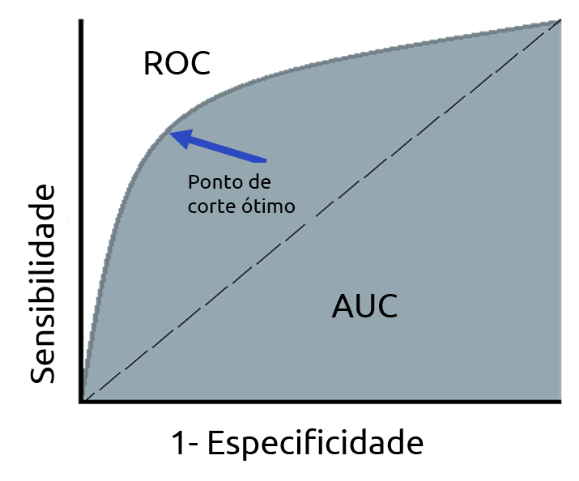

Metricas para validação de modelos de machine learning
As métricas de validação são utilizadas para analisar a qualidade dos modelos de Machine Learning. Ou seja, traz a informação do desempenho do modelo em dados desconhecidos.
O objetivo de um modelo de machine learning de apredizado supervionado e tentar estimar uma determinada variavel (acontecimento) no caso de churn a probabilidade de um clienter abandonar o serviço.
Assim, analisando as diferentes métricas de validação dos modelos conseguimos analisar o poder preditivo do mesmo, antes de colocar em produção.
Escolher uma boa métrica para avaliar o modelo é tão importante quanto escolher um bom modelo.
matriz de confusão
Matriz de confusão é uma matriz que traz a informação de todos os acertos e erros do modelo ao prever as classes.
Matriz de confusão é uma matriz que traz a informação de todos os acertos e erros do modelo ao prever as classes.
A matriz de confusão é uma maneira de exemplificar esses resultados e ela nos traz as informações das frequências dos acertos e erros do modelo. Ou seja, nos mostrará as frequências:
Verdadeiro Negativo (VN): são as observações que o modelo previu como negativas e realmente eram negativas, ou seja, o modelo classificou corretamente.
Falso Positivo (FP): são as observações que o modelo previu como positivas, mas na realidade eram negativas. Ou seja, o modelo estimou errado a classe que temos interesse em estimar.
Falso Negativo (FN): são as observações que o modelo identificou como negativas, mas eram positivas. Ou seja, as observações que o modelo estimou errado .
Verdadeiro Positivo (VP): são as observações que são positiva e o modelo consegue classificar corretamente. Ou seja, as observações, da classe de interesse, que o modelo classificou corretamente.
Acurácia
Acurácia é a métrica mais simples, ela representa o número de previsões corretas do modelo. Ótima métrica para utilizar quando os dados estão balanceados, vai dar uma visão geral do quanto o modelo está identificando as classes corretamente.
Porém, não devemos utilizar a acurácia, quando temos classes desbalanceadas, causa uma falsa impressão de bom desempenho. Isso acontece no caso de churn, felizmente a maioria dos clientes não abandonam o serviço
Valor Preditivo Negativo
Valor Preditivo Negativo (VPN) é a métrica que traz a informação da quantidade de observações classificadas como negativa (0) que realmente são negativa. Ou seja, entre todas as observações prevista como negativa (0), quantas foram identificadas corretamente.
Valor Preditivo Negativo Positivo
Precisão, também conhecida como Valor Preditivo Positivo (VPP), é a métrica que traz a informação da quantidade de observações classificadas como positiva (1) que realmente são positiva. Ou seja, entre todas as observações identificadas como positivas (1), quantas foram identificadas corretamente.
Recall
Recall ou Sensibilidade é a proporção dos Verdadeiros Positivos entre todas as observações que realmente são positivas no seu conjunto de dados. Ou seja, entre todas as observações que são positivas quantas o modelo conseguiu identificar como positiva. Representa a capacidade de um modelo em prever a classe positiva.
Especificidade
Especificidade é a proporção dos Verdadeiros Negativos entre todas as observações que realmente são negativas no seu conjunto de dados. Ou seja, entre todas as observações que são negativas, quantas o modelo conseguiu prever como negativa. Representa a capacidade de um modelo em prever a classe negativa.
F1- Score
F1-Score é a média harmônica entre o recall e a precisão (precision). Utilizada quando temos classes desbalanceada.
Área sob a Curva ROC
A curva ROC (Receiver Operating Characteristic Curve) é a curva gerada pela taxa de verdadeiros positivos (sensibilidade) e pela taxa de falsos positivos (1 – especificidade) para diferentes pontos de cortes (c).
A curva ROC oferece uma visão geral de um classificador e pode ser utilizada para encontrar pontos de corte ideias. O corte que deixa a curva mais próxima do vértice (0, 1) maximiza a sensibilidade conjuntamente com a especificidade.
Uma medida decorrente da curva ROC é o AUC (Area Under the Curve), que nada mais é que a área abaixo da curva. O AUC varia entre 0 e 1 e quanto maior o AUC melhor o modelo.
Utilizada quando temos classes desbalanceada e sua principal vantagem é poder escolher o melhor ponto de corte para otimizar o desempenho do modelo.

KS-score
A métrica de Kolgomorov-Smirnov (KS-score) quantifica a distância entre as curvas de duas funções de probabilidade acumuladas. O KS-escore assume valores entre 0 e 1, e é definido como o máximo entre as distâncias dessas curvas.
Essa métrica é utilizada para medir o quão bem o modelo separa as classes da variável resposta (0 ou 1, bom ou mau, sim ou não). Valores de KS próximos de 1 indicam que o modelo separa bem as classes.